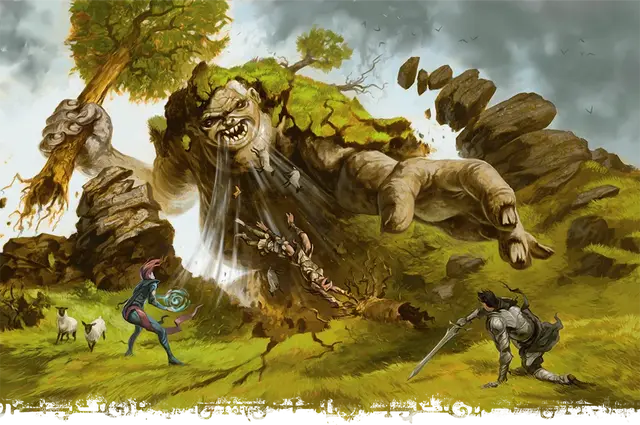

Отпрыск Гролантора
Scion of Grolantor
Громадный Великан (Титан), обычно хаотично-злой

Класс Доспеха 18 (природный доспех)
Хиты 402 (23к20 + 161)
Скорость 60 футов
| мод | спас | ||
|---|---|---|---|
| СИЛ | 27 | +8 | +8 |
| ЛОВ | 14 | +2 | +2 |
| ТЕЛ | 25 | +7 | +7 |
| мод | спас | ||
|---|---|---|---|
| ИНТ | 15 | +2 | +2 |
| МДР | 21 | +5 | +12 |
| ХАР | 18 | +4 | +11 |
Навыки Восприятие +12
Сопротивление урону огонь, холод, электричество; дробящий, колющий, рубящий от немагических атак
Иммунитет к урону яд
Чувства пассивное Восприятие 22
Языки Великаний, Первичный
Опасность 22 (41000 опыта)
Бонус мастерства +7
Особенности
Легендарное сопротивление (6/день). Если отпрыск проваливает спасбросок, он может вместо этого сделать спасбросок успешным.
Сопротивление магии. Отпрыск совершает с преимуществом спасброски от заклинаний и прочих магических эффектов.
Осадный монстр. Отпрыск наносит двойной урон объектам и сооружениям.
Действия
Мультиатака. Отпрыск совершает одну атаку Дубиной из великого древа и две атаки Размашистым ударом, или он совершает три атаки Булыжником.
Дубина из великого древа. . Рукопашная атака оружием: +15 к попаданию, досягаемость 30 футов, одна цель. Попадание: 30 (4к10 + 8) дробящего урона. Если целью является существо, оно должно преуспеть в спасброске Силы Сл 23, иначе будет отброшено горизонтально на расстояние до 100 футов по прямой от отпрыска и упадет ничком.
Размашистый удар. . Рукопашная атака оружием: +15 к попаданию, досягаемость 20 футов, одна цель. Попадание: 26 (4к8 + 8) урона силовым полем.
Булыжник. . Дальнобойная атака оружием: +15 к попаданию, дистанция 120/480 футов, одна цель. Попадание: 27 (3к12 + 8) дробящего урона.
Затягивание (перезарядка 5-6). Отпрыск вдыхает поток воздуха в линии 120 футов длиной и шириной 15 футов. Каждое существо в этой области, являющееся Огромного размера или меньше, должно преуспеть в спасброске Силы Сл 23 или будет притянуто на 120 футов по прямой к отпрыску и проглочено. Проглоченное существо опутано, получает полное укрытие от атак и прочих эффектов вне отпрыска, а также получает 24 (7к6) урона силовым полем в начале каждого хода отпрыска.
Желудок отпрыска может содержать в себе до двух существ одновременно. Если отпрыск получает 60 урона или более за один ход от существа, находящегося внутри него, отпрыск должен совершить спасбросок Телосложения Сл 17 в конце этого хода или отрыгнуть всех проглоченных существ, каждое из которых падает ничком в пределах 10 футов от отпрыска. Если отпрыск умирает, любое проглоченное существо перестаёт быть опутанным и может выбраться из трупа, потратив 15 футов перемещения, падая при выходе ничком.
Бонусные действия
Перемещение, сотрясающее землю. Отпрыск перемещается на свою скорость, после чего распространяет ударную волну через землю 60-футовой сферой с центром на себе. Каждое существо на земле в этой области, которое концентрируется, должно преуспеть в спасброске Телосложения Сл 23, иначе потеряет концентрацию.
Реакции
Поедание. Сразу после получения урона, при наличии хотя бы одного проглоченного существа, отпрыск наносит 10 (3к6) урона силовым полем каждому проглоченному существу и восстанавливает 10 хитов.
Местные эффекты
Область, окружающая отпрыска Гролантора, изменяется под действием магии великана, создавая один или несколько из следующих эффектов:
• Обильная еда. Сельскохозяйственные культуры и скот быстро растут и размножаются в пределах 6 миль от отпрыска.
• Наделенные силой холмовые великаны. Холмовые великаны находящиеся в пределах 1000 футов от отпрыска получают бонус +7 к броскам атаки и урона.
• Фермерская погода. Погода в пределах 6 миль от отпрыска всегда идеальна для ведения сельского хозяйства: солнечная и теплая, с периодическими дождями.
Если отпрыск погибает, эти эффекты мгновенно прекращаются.
Описание
Великаны происходят от Всеотца Аннама и его детей. Но отпрыски богов великанов могут похвастаться большими претензиями: они внуки Аннама и занимают привилегированное место среди великанов. В некоторых мирах эти отпрыски правили первыми империями великанов, пока Аннам не удалился в уединение. В других мирах отпрыски охраняют места своего рождения (которые богаты магией стихий) или удерживают субстанцию мира вместе.
Отпрыски богов великанов - невероятно могущественные существа, которые наполняют окружающий мир первобытной магией. Во многих мирах они дремлют и стали частью ландшафта. В этом случае каждый отпрыск заключен в стазис внутри могущественного элементаля, называемого колыбелью. Колыбель защищает спящего отпрыска и следует его подсознательным желаниям, в том числе отгоняя незваных гостей. Но если колыбель погибает, отпрыск внутри полностью пробуждается.
Холмовой отпрыск
Дремлющего отпрыска Гролантора часто принимают за холм, и иногда люди возводят стоячие камни, деревню или город на спине отпрыска, не подозревая о могучей силе, скрывающейся под ними. Такие поселения могут процветать веками, поскольку магия отпрыска способствует процветанию сельскохозяйственных культур и домашнего скота в окружающем регионе. Древнее дерево возвышается на гребне холма.
При пробуждении "колыбель холмового отпрыска" поднимается в виде массы грязи, камня и корней с двумя массивными ветвями. Колыбель использует корни деревьев и волны грязи, чтобы сковать и похоронить врагов.
Если колыбель разрушена, отпрыск Гролантора внутри нее пробуждается. Достигая 50 футов в высоту, отпрыск пожирает все, что находится в пределах досягаемости, чтобы утолить свой голод. Его мощные легкие могут всасывать пищу прямо в пищевод. Отпрыск использует огромное дерево, чтобы отбрасывать врагов на далёкие расстояния.